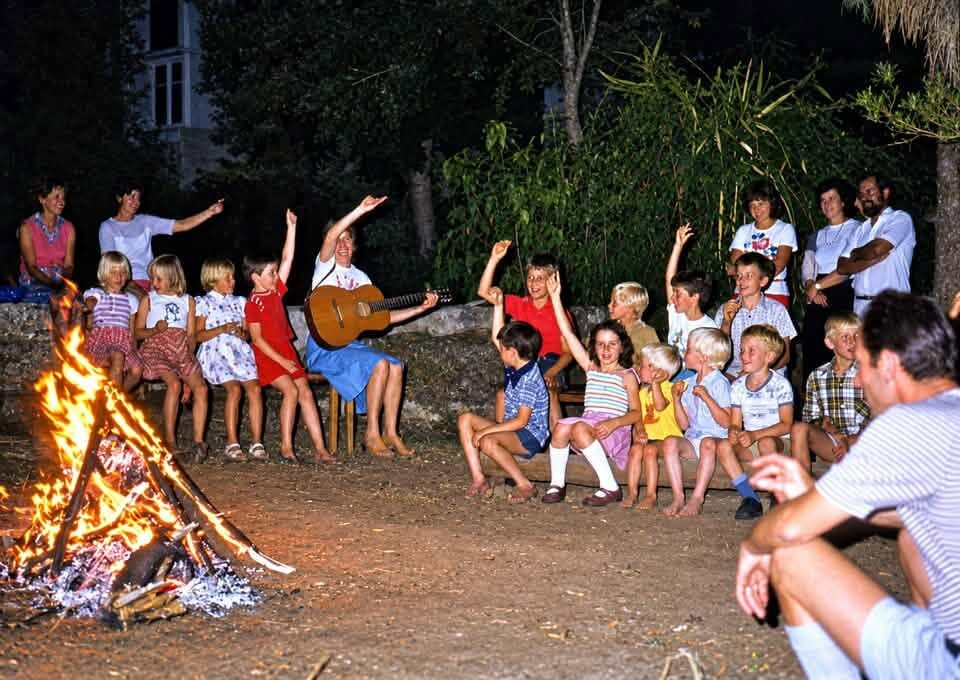
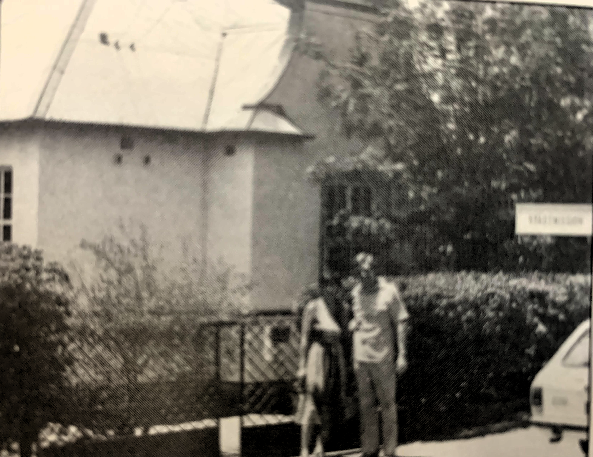

Familie Hechler im Garten 1984: Kinder Marc, Andreas und Miriam
Stami-Programm zu einer Zeit wo man Plakate noch von Hand oder mit der Schreibmaschine geschrieben hat

Garten der Stadtmission mit Kinderschar. 1977
Fischfluss-Canyon Wanderung 1978. Mit dabei waren unter anderem Gernot von Grüter, Klaus Bäumler, Ernst Neef (später Missionsmitarbeiter in KwaZulu Natal), Albert Jahnke
Braai im Stadtmissionsgarten: Peter Hechler im Gespräch mit Mitgliedern
Braai im Stadtmissionsgarten
Braai im Stadtmissionsgarten. Hans-Dieter Redecker im Gespräch mit ?
Braai im Stadtmissionsgarten: Kinder auf der Schaukel
Beate Hill - sie und ihr Mann gründeten den Hauskreis im Jahr 1976

Peter und Edith Hechler vor dem Haus in der Bismarckstr. 54
50 Jahre Stadtmission Windhoek
1981-1990
Bibelstunde in der alten Stadtmission. 1983
Gemeindeausflug Farm Hoffnung
Gemeindeausflug Farm Hoffnung
Kinderstunde 1981 in der ehemaligen Garage, geleitet durch Erika Redecker
Kinderstunde mit Monika Pietzsch. 1984
Jugendraum Anfang 1984 noch bevor der neue Stadtmissions-Saal eingeweiht wurde
Jungendfreizeit im Namib-Naukluft-Park
Bau des Stadtmissionssaales im Jahr 1984
Bilder vom Bau des Stadtmissionssaales im Jahr 1984
Die Einweihung des Saales. Hans-Dieter Redecker hatte in der Bauzeit quasi die Bauleitung und Übersicht. darum übergibt symbolisch die Schlüssel zum Saal
Die Einweihung des Saales: Hans-Dieter Redecker hatte in der Bauzeit quasi die Bauleitung und Übersicht. darum übergibt symbolisch die Schlüssel zum Saal
Die Einweihung des Saale: Hans-Dieter Redecker hatte in der Bauzeit quasi die Bauleitung und Übersicht: darum übergibt symbolisch die Schlüssel
Die Einweihung des Saales: Hans-Dieter Redecker hatte in der Bauzeit quasi die Bauleitung und Übersicht: darum übergibt symbolisch die Schlüssel
Die Einweihung des Saales: Hans-Dieter Redecker hatte in der Bauzeit quasi die Bauleitung und Übersicht: darum übergibt symbolisch die Schlüssel
Nach der Einweihung des Saales
Gottesdienst mit Gastprediger Trauernicht
Gottesdienst im neuen Saal: Monika und Kinder
Peter Und Edith Hecher vor dem Haus in der Bismarckstrasse. 1978
Gespräche vor dem Gottesdienst. Zu sehen unter anderem die Frauen Dannert, Staby
Taufe von Gisela Redecker während einer Osterfreizeit am Friedenau-Damm
Gemeindebraai bei Beilers auf ihrem Plot in Brakwater
Gemeindebraai bei Beilers auf ihrem Plot in Brakwater
36 Gemeindebraai bei Beilers
Mitgliederaufnahme: einer der ersten war Ludwig Hester
Farmgottesdienst Helmeringhausen im Garten der Familie Hester.
Horst und Monika Pietsch
Hochzeit von Horst und Monika Pietzsch. 1998
Kinderchor zur Hochzeit von Horst und Monika Pietsch. Erika Redecker dirigiert den Chor
Bibelstunde in der alten Stadtmission. 1983
Bibelstunde in der alten Stadtmission. 1983
Gemeindeausflug Farm Hoffnung
Gottesdienst im Saal in der Bismarckstr. 54
50 Jahre Stadtmission Windhoek
1991-2000
Chor der Stadtmission: Ina Thomass, Lindi Kirsten, Karin Seiler, Roswitha Hosthemke, Birgit von Ludwiger, Helmuth Weinert, Heiko von Ludwiger, Helmut Basson